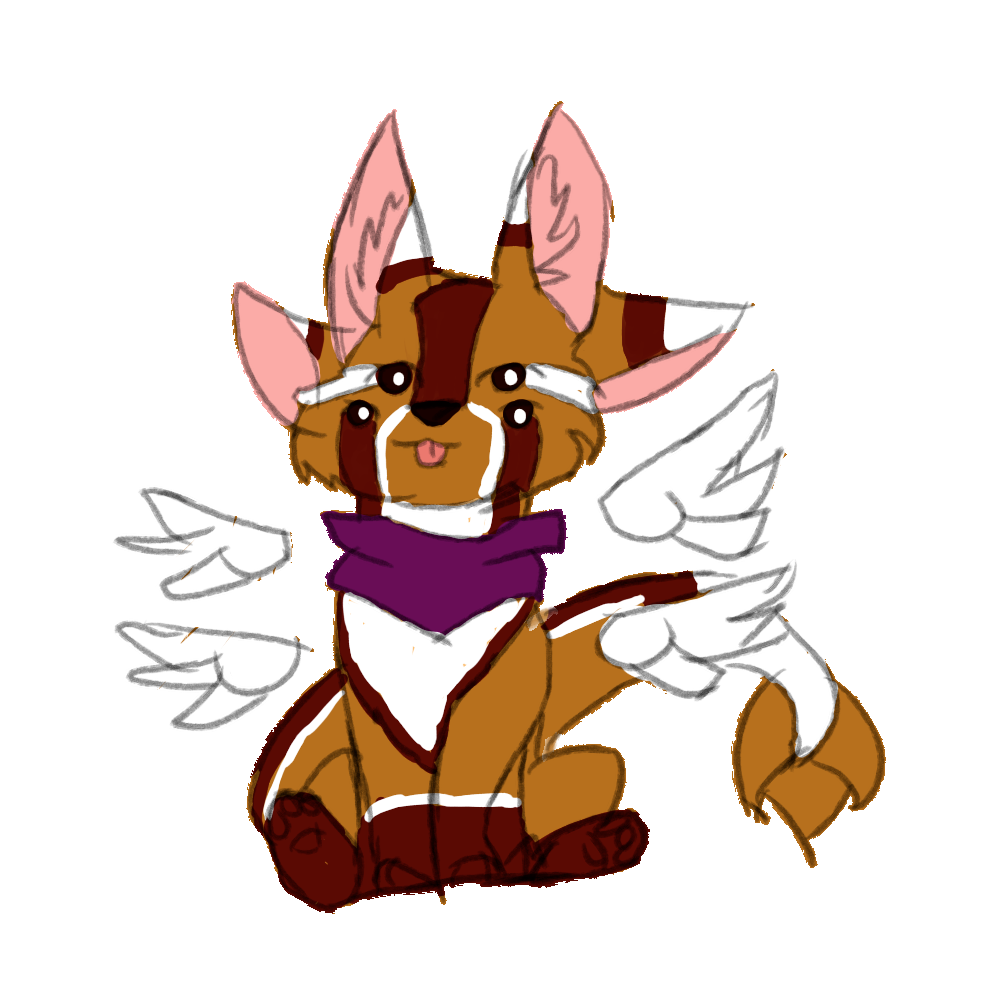

Name: Siloh
species: Cyther (oringinal species)
about my character:
siloh is a six legged , four eared , four eyed alien fox. she is a member of my orininal speies, the cythers!
my character's back story:
Siloh is an alien fox , she was created when a species of alien crashed down to earth and died, scientists took the dead alien' s DNA and attempted to clone it over 900 times , with only one specimen surviving , ( siloh). The scientists studied siloh in captivity for a while , then she escaped , and along her travels she met a husky named Apollo, Apollo was also from space, his ship had crashed down and Apollo had a fatal wound in his heart, luckily for him siloh has two! ( one a nucular reactor one a biological heart) siloh gave Apollo her heart as a replacement and they fell in love
email the webmaster:
siloh.projectzero@gmail.com
siloh.projectzero@gmail.com